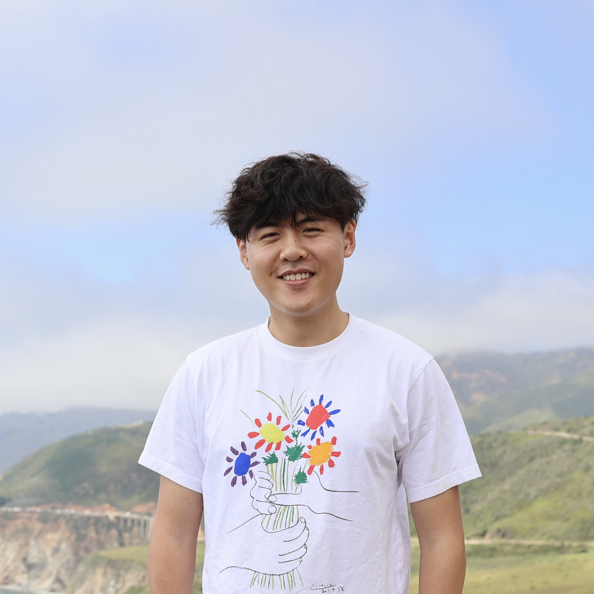

|
Adam Sun
I'm a PhD candidate at Stanford University,
advised by Ehsan Adeli and co-advised by
Gordon Wetzstein. My research is in
computer vision, focusing on human-centric video generation and 3D reconstruction and understanding. In the past, I've worked on projects focused on reconstructing occluded humans from monocular video, and have recently been focusing on cool applications of video diffusion.
Email /
Scholar /
Github
/
LinkedIn /
X
|

|
|
|
ReGenHuman: Re-Generating Human Appearances for Realistic Full-Body Video Anonymization
Adam Sun,
Eshaan Barkataki,
Arnold Milstein,
Gordon Wetzstein,
Ehsan Adeli
arXiv, 2026 (under review)
project page
A "regenerate, don't edit" pipeline for full-body video anonymization that resynthesizes human regions entirely from identity-free structural cues with a fine-tuned video diffusion model.
|
|
|
Effective Multi-sensor Conditioning for Street-view Novel-view Synthesis
Zhengfei Kuang,
Adam Sun,
Liyuan Zhu,
Tong Wu,
Shengqu Cai,
Jonathan Tremblay,
Iro Armeni,
Ehsan Adeli,
Lior Yariv,
Gordon Wetzstein
arXiv, 2026 (under review)
project page
/
arXiv
Conditioning novel-view synthesis with additional views improves the quality and robustness of video diffusion-based street-view scene rendering.
|
|
|
OccFusion: Rendering Occluded Humans with Generative Diffusion Priors
Adam Sun*,
Tiange Xiang*,
Scott Delp,
Li Fei-Fei,
Ehsan Adeli
NeurIPS, 2024 (* equal contribution)
project page
/
arXiv
/
code
Using generative diffusion priors + 3DGS to render humans under severe occlusion.
|
|
|
Rendering Humans behind Occlusions
Tiange Xiang,
Adam Sun,
Scott Delp,
Kazuki Kozuka,
Li Fei-Fei,
Ehsan Adeli
IEEE TPAMI, 2025
project page
/
arXiv
An improvement on OccNeRF with an occlusion-aware scene decomposition that separates the human from occluders.
|
|
|
Rendering Humans from Object-Occluded Monocular Videos
Tiange Xiang,
Adam Sun,
Jiajun Wu,
Ehsan Adeli,
Li Fei-Fei
ICCV, 2023
project page
/
arXiv
/
code
A neural rendering approach that recovers high-quality 3D humans from monocular video even when the subject is significantly occluded by objects in the scene.
|
Academic Service
Reviewer, NeurIPS 2025, 2026
Program Committee, MoCha 2026
Teaching Assistant, Stanford CS 231A (Computer Vision: From 3D Reconstruction to Recognition)
|
|